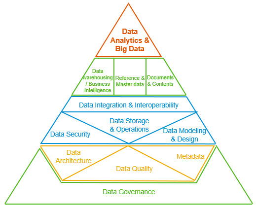

Master Data Managment (MDM)
1
About
2
Introduction
3
La qualité des données dans les sources de données
3.1
Objectifs
3.2
Introduction à la qualité des données (Jour 1)
3.3
Les différents types de qualité des données
3.4
Les conséquences de la mauvaise qualité des données
3.5
Les avantages d’une bonne qualité des données
3.6
Les processus de gestion de la qualité des données
3.7
Les outils et technologies de gestion de la qualité des données
3.8
Évaluation de la qualité des données (Jour 2)
3.9
Les différents types d’évaluation de la qualité des données
3.10
Les outils et technologies d’évaluation de la qualité des données
3.11
La résolution des problèmes de qualité des données
3.12
Les outils et technologies de résolution des problèmes de qualité des données
3.13
Amélioration de la qualité des données (Jour 3)
3.14
Les différents types d’amélioration de la qualité des données
3.15
Les outils et technologies d’amélioration de la qualité des données
3.16
La surveillance de la qualité des données
3.17
Les outils et technologies de surveillance de la qualité des données
4
Big Data, présentation de méthodes et solutions pratiques pour l'analyse des données volumineuses (#bigdata_methods)
References
Karim Mezhoud
Master Data Managment
Master Data Managment
Karim Mezhoud
2023-07-19
Chapter 1
About

by Linxiao Ma